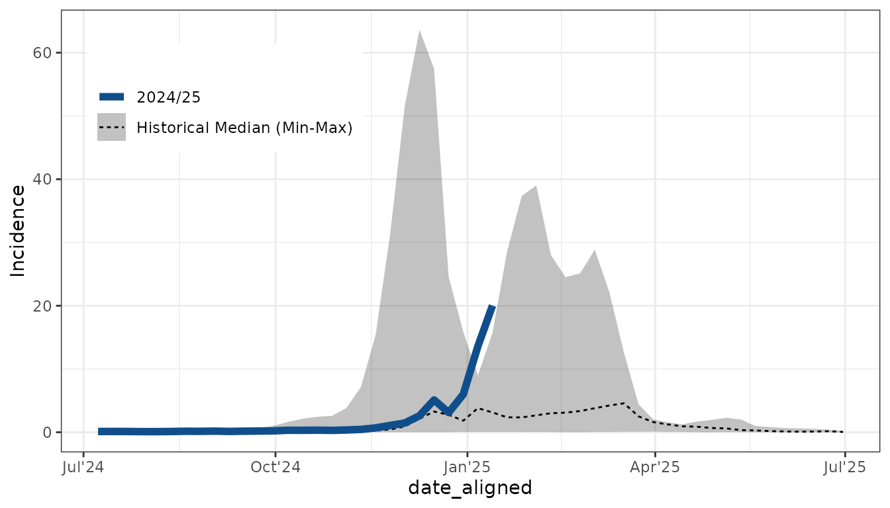
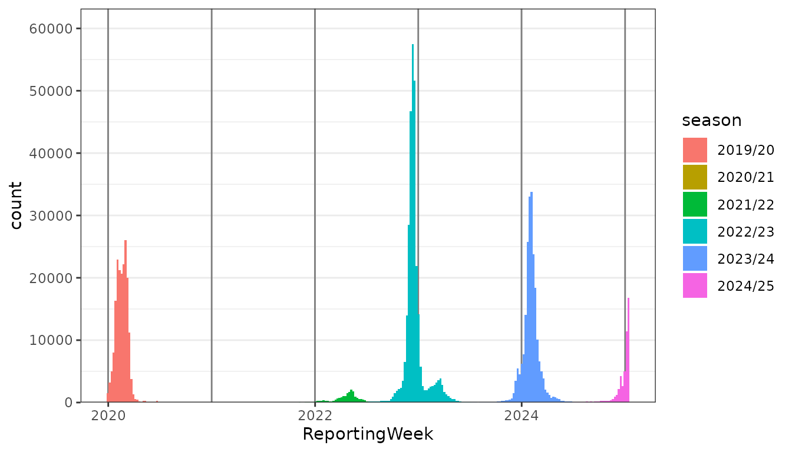

Seasonal Plots: Align case data for seasonal analysis
Source:vignettes/align_dates_seasonal.Rmd
align_dates_seasonal.RmdThe seasonal plot
This vignette is still work in progress. But the examples are hopefully already helpful and inspiring.
The seasonal plot is a commonly used plot for seasonal respiratory
pathogens like Influenza and RSV. For seasons covering the turn of the
year have to be defined. In a second step the previous seasons have to
be aligned to the current season to allow for a comparison. Here we show
how this is automated using ggsurveillance.
Seasonal alignment and plot
library(ggplot2)
influenza_germany |>
align_dates_seasonal(
dates_from = ReportingWeek, date_resolution = "epiweek", start = 28
) -> df_flu_aligned
ggplot(df_flu_aligned, aes(x = date_aligned, y = Incidence, color = season)) +
geom_line() +
facet_wrap(~AgeGroup) +
theme_bw()
influenza_germany |>
align_dates_seasonal(dates_from = ReportingWeek) |>
group_by(AgeGroup, season) |>
tally(wt = Cases) |>
pivot_wider(names_from = AgeGroup, values_from = n)
#> # A tibble: 6 × 5
#> season `00+` `00-14` `15-59` `60+`
#> <chr> <dbl> <dbl> <dbl> <dbl>
#> 1 2019/20 186788 58628 96769 30596
#> 2 2020/21 683 132 267 283
#> 3 2021/22 18980 7176 9580 2206
#> 4 2022/23 299167 93343 149590 55944
#> 5 2023/24 217235 57544 97617 61879
#> 6 2024/25 48427 12438 22063 13882Combining everything for the seasonal plot
influenza_germany |>
filter(AgeGroup == "00+") |>
align_dates_seasonal(dates_from = ReportingWeek,
date_resolution = "isoweek",
start = 28) -> df_flu_aligned
ggplot(df_flu_aligned, aes(x = date_aligned, y = Incidence)) +
stat_summary(
aes(linetype = "Historical Median (Min-Max)"), data = . %>% filter(!current_season),
fun.data = median_hilow, geom = "ribbon", alpha = 0.3) +
stat_summary(
aes(linetype = "Historical Median (Min-Max)"), data = . %>% filter(!current_season),
fun = median, geom = "line") +
geom_line(
aes(linetype = "2024/25"), data = . %>% filter(current_season), colour = "dodgerblue4", linewidth = 2) +
labs(linetype = "") +
scale_x_date(date_labels = "%b'%y") +
theme_bw() +
theme(legend.position = c(0.2,0.8))
Other visualisations
influenza_germany |>
filter(AgeGroup != "00+") |>
align_dates_seasonal(dates_from = ReportingWeek) |>
ggplot(aes(x = ReportingWeek, weight = Cases, fill = season)) +
geom_vline_year(color = "grey50") +
# Use stat = count for more efficient plotting
geom_epicurve(color = NA, stat = "count") +
scale_y_cases_5er() +
theme_bw()